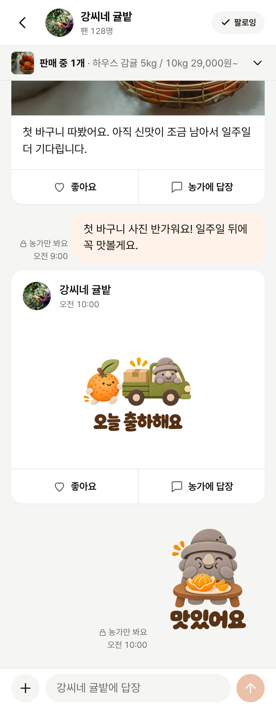
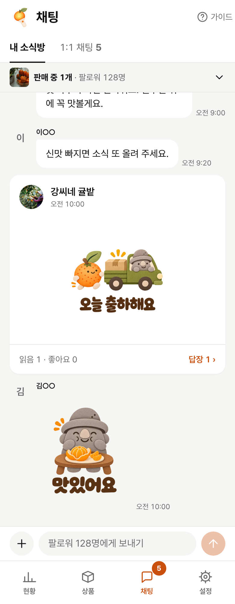
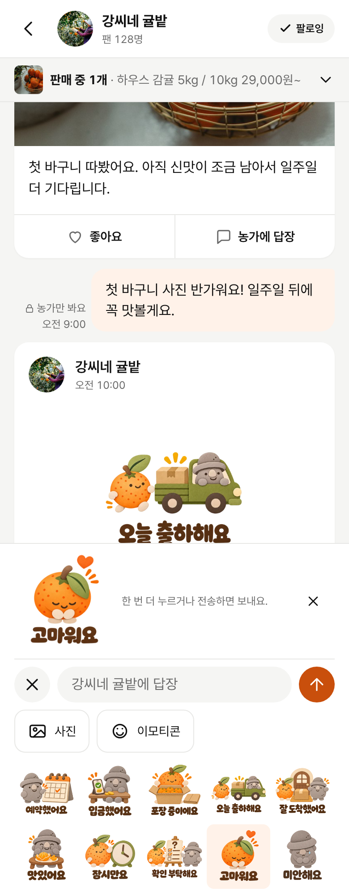
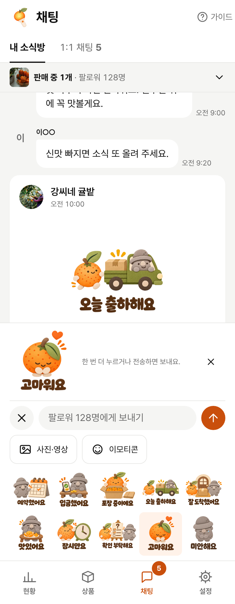

새 소식방 위의 이모티콘
#820의 실제 새 소식 카드 UI를 로컬 서버에 연결해 캡처했습니다.
생산자 소식은 카드 가운데, 소비자 답장은 ‘농가만 봐요’ 표시와 함께 보입니다.
소비자가 보는 소식방

‘오늘 출하해요’는 농가의 소식 카드 · ‘맛있어요’는 비공개 답장생산자가 보는 내 소식방

같은 카드와 이모티콘을 사용하며 소비자 답장을 함께 확인합니다.공통 + 메뉴와 선택 미리보기
사진/이모티콘 → 한 번 선택해 미리보기 → 한 번 더 누르거나 전송.
생산자의 전체 소식 전송은 기존 확인 시트를 거칩니다.
소비자

생산자
